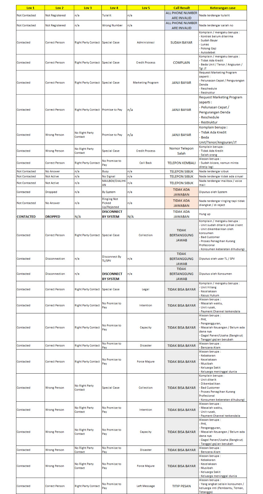

🗺️ Flow Penanganan ASR
Klik setiap tahap untuk melihat detail penanganan
Desk Coll
OVD 1–9 hariFAC
OVD 10–90 hariPAC
OVD 91–Non WORecovery
Write OffWrite Off
OVD >150 hariDesk Account Solution (Desk Coll)
Penanganan via telepon & WhatsApp untuk konsumen overdue awal
👥 Man Power & Jam Kerja Update 2025
- Agent Reguler: 30 orang
- Agent Over 90 hari: 3 orang
- SPV: 2 orang
- QA: 1 orang
- Agent External (vendor): Jabodetabek + Kalimantan
- Agent Internal (SIM): selain Jabodetabek & Kalimantan (Sulawesi, Sumatra, Jawa Timur, dll.)
- 💡 Dulu semua pakai external. Sejak 2022 ada internal, bertahap mau pindah ke internal semua.
📅 Overdue Range & Mulai Call
- Produk CS & DS: bucket OVD 2–9 hari
- Produk KKB: bucket OVD 2–30 hari
- ⚠️ OVD hari ke-1: hanya WA blast otomatis oleh IT — agent belum call
→ OVD 1: hanya WA blast | OVD 2–5: tidak ada penanganan | OVD 6: baru mulai di-call
📞 Sistem & Status Agent di OnTrace
- Sistem: OnTrace (pantau real-time oleh SPV)
- WA Call setelah pk 14:00 — SPV sebar no telp data NSTD/CBR ke agent untuk di-WA
- Hasil WA diinput kembali ke OnTrace sesuai call result
afk, siap call
ongoing call
input remark
solat
ke WC
makan siang
🔄 Flow Data Harian — OnTrace
Email ke SPV: txt file terencrypt
| Status | Diprioritaskan pada OVD ke- |
|---|---|
| CBC (Can Be Contacted) | 2, 5, 7, 9 |
| CBR (Cannot Be Reached) | 2, 7 |
| DSS (Diangkat Salah Sambung) | 2, 5, 9 |
| NSTD | 2–9 |
| UNK (Unknown Payment) | 2–9 |
| No Handle | 2–9 |
🏆 KPI & Penilaian Agent
| KPI | Target |
|---|---|
| 💰 Paid Rate (harian) | 10% |
| 💬 Talk Rate (harian) | 25% |
| 📊 Success Rate (overall) | 50% |
- 📈 Kinerja — target harian (paid & talk)
- 🗓️ Kehadiran — sesuai absensi
- 👔 Penilaian SPV
- 🥇 Stretching Goals — berapa kali jadi top agent / bottom agent
- 😊 Attitude — intonasi saat call, sopan
- 🔧 Teknis — minta QA (penilaian teknis dari QA)
📑 Multi Kontrak
Jika konsumen memiliki beberapa kontrak aktif, agent cukup menelepon sekali, namun semua kontrak yang jatuh tempo wajib ditagih sekaligus.
💳 Metode Pembayaran Angsuran — Deskcoll Mobil
- Step 1: Autodebet angsuran terlebih dahulu
- Step 2: Setelah angsuran → autodebet denda (sesuai nominal yang bisa didebet)
- Step 3: Retry autodebet denda terus-menerus s.d. H-5 jatuh tempo berikutnya
- Setelah H-5 JT → autodebet denda di-stop, ulang ke Step 1
- No VA = 55000 + kode unik
- Dibuat via OnTrace → dikirim ke WA konsumen oleh akun WA BCAF Official
- Batas waktu: 24 jam
- Setting di OnTrace: bisa pilih bayar angsuran saja atau angsuran + denda
- M-payment & e-commerce: angsuran + denda
- FINA App juga menggunakan VA 55000
- No VA = 50000 + No Kontrak
- Tidak ada expired time
- Dana masuk ke deposit terlebih dahulu
- Deposit tidak akan dipotong denda kecuali konsumen setuju
- Dipakai untuk program OVD >90 hari
📊 Kategori Call Result
| Kode | Keterangan |
|---|---|
| PTP | Promise to Pay — janji bayar (max sampai akhir bucket) |
| UNK | Unknown Payment — konsumen ngaku sudah bayar → minta bukti bayar → kirim ke WA SPV |
| DSS | Diangkat Salah Sambung — tetap diinput meskipun konsumen berbohong |
|
CBC — Can Be Contacted
Terhubung & bicara dengan konsumen, tapi belum ada janji bayar yang jelas. Semua alasan berikut dikelompokkan sebagai CBC:
| |
| Kode | Keterangan |
|---|---|
| NSTD | Nada Sambung Tidak Diangkat — di-call → ringing → tidak diangkat |
|
CBR — Cannot Be Reached
Tidak bisa tersambung sama sekali — muncul suara operator atau langsung putus. Kondisi berikut ini adalah CBR (bukan sub-kategori):
| |
🔴 Deskcoll Agent — OVD >90 Hari (3 Agent Khusus)
Menangani konsumen OVD >90 hari dengan cara menghubungi & menginformasikan program diskon denda. Berjalan berdampingan dengan PAC (kunjungan lapangan).
- OVD >90 hari s.d. non-WO
- Outstanding Pokok < Rp 100 juta
- Sisa angsuran (tenor) maks 30%
- Sisa angsuran >10–30%: diskon 70%
- Sisa angsuran <10%: diskon 80%
- New Comer: baru masuk bulan ini
- Stay: bulan lalu sudah masuk, bulan ini masuk lagi
IT kirim data via email ke Bu Yulike (Unit Head) dalam bentuk Excel → diberikan ke agent setiap awal bulan.
(angsuran + denda + tambahan 40 hari + relaksasi)
Dibuat ketika konsumen sudah ada dana tapi kurang dari total kewajiban.
OSpok = Rp 15 jt | Osar = Rp 16 jt
Total Kewajiban (Osar+denda) = Rp 80 jt
Setelah diskon = Rp 29 jt
Dana konsumen = Rp 23 jt
Memo pengajuan khusus → approval sampai BOD (Pak Herwandi). Setelah approve → bayar VA 50000 → bukti bayar → memo pelunasan.
- Minggu 1: Fokus data No Handle
- Minggu 2: Fokus yang delivered (NSTD atau WA centang 2)
- Minggu 3–4: Callback / follow up yang CBC
🔍 Jobdesk QA Desk Coll Mobil
- Tarik & sebar data harian dari IT (BCAF & BCAMF) berdasarkan prioritas — mencegah SPV pilih-pilih data mudah
- Sampling harian: 130 PTP + 40 CBC dari recording agent (dibagi rata per agent yang masuk). Sisa sampling hari ini → target hari berikutnya
- Sebar data KKB OVD 10–30
- Sampling penanganan agent >90 hari — cek kesesuaian nominal pelunasan (rawan fraud)
- Cek result selain PTP/CBC — deteksi penyimpangan (salah input result / kesalahan pengucapan saat call)
- Report harian ke grup WA: rata-rata poin agent, diolah via PIVOT (ada keterangan kekurangan agent)
- Roleplay agent seminggu sekali
- Monthly report ke Pak Bowo: evaluasi kinerja agent 1 bulan + ide & perbaikan bulan selanjutnya
Catatan: Sampling PTP otomatis melalui form penilaian di sistem; sampling CBC dilakukan manual melalui Excel.
2 Jobdesk Desk Coll Motor
- Mengingatkan konsumen H-1 sebelum jatuh tempo
- Hanya berlaku untuk angsuran ke-1 s.d. 3
- Yang di-call: nomor telepon konsumen saja (bukan emergency contact)
- Badan usaha: yang di-call PIC perusahaan
- Memiliki WA Coster: broadcast TL/UH → konsumen balas chatbot → pilih "agent kami" → terhubung ke agent reminder. WA Coster tidak termasuk KPI agent.
- Follow up konsumen yang sudah menunggak (DPD / OVD > 0)
- Jam call: 08:30 – 17:30 sesuai jam kantor (POJK 22/2023: batas OJK 08.00–20.00)
- Urutan call: No. Konsumen → Emergency Contact (spouse jika ada → office jika ada)
- Multi kontrak (badan usaha): jika jatuh tempo sama → call sekali, input hasilnya sesuai jumlah kontrak; jika beda → call sesuai tanggal masing-masing
Sistem & Aplikasi Update Mar 2025
- 📞 Sistem utama: Ecentrix Collection System
- ❌ X-Lite sudah tidak digunakan sejak 1 Maret 2025
- ❌ Sistem callback sudah tidak ada; agent boleh call ulang kapan saja jika data fresh (untouch) sudah habis
- 📥 Data dari IT → masuk Ecentrix otomatis setiap pagi jam 07:00, dibagi sama rata → TL (Bu Arnita) bisa assign atau memindahkan data secara manual ke satu agent (jika ada yang cuti)
- 📊 SPV/TL monitoring kegiatan agent melalui Ecentrix — ada status activity seperti ACW, Call, Ready, dll.
- ⚠️ Eskalasi Cabang (Auto Eskalasi): tetap ada, namun cara kerjanya bukan bucket pindah langsung ke FAC — melainkan FAC membantu meski data tetap di bucket Deskcoll. Kasus yang bisa dieskalasi: tidak bertanggung jawab (tidak diangkat 5× berturut-turut di hari berbeda), tidak bisa bayar, karakter buruk. Eskalasi manual: nomor invalid — dari Ecentrix, TL approve.
- 📌 Merger 2025: Sebelumnya PAC Motor pakai MCS, data bisa pindah otomatis dari Ecentrix ke MCS. Sekarang sudah menggunakan MAS — data tidak bisa pindah otomatis.
- 🔄 Untuk update no. telp konsumen: SPV kirim list data yang mau diupdate ke AS Support melalui Email
- 🔍 Jika konsumen ngaku sudah bayar → cek di FAST
- 🔍 Ngaku salah sambung → tetap diinput sesuai hasil call; kebenaran bisa dicek dari history di FAST
📋 Status Call (Call Result) Deskcoll Motor
- Menangani nomor Invalid Number → kirim WA Coster (BCAF Official)
- Report pencapaian dan produktivitas
- Update KPI Agent
KPI Agent Motor Diperbarui
📞 Agent Active:
| KPI | Target |
|---|---|
| Success Rate | 18% |
| Success Call | 40% |
| Bucket Current / Current Rate | 89–92% |
| Produktifitas | 100% |
| Kehadiran | 100% |
| Flow Rate | Tiap bulan berbeda |
| KPM | 9,5% / 97% |
| KSM | 5,1% / 5,5% |
📲 Agent Reminder:
| KPI | Target |
|---|---|
| Success Rate | 42% |
| Success Call | 60% |
| Bucket Current | 89–92% |
| Kehadiran & Produktifitas | 100% |
| Payment Success | 42% |
💡 Latar belakang Agent Reminder: untuk mengurangi potensi keterlambatan pembayaran yang sama. Di Deskcoll Motor tidak ada vendor. Flow rate / roll rate = bahan yang masuk ke bucket FAC (Maju).
💡 Insentif: TL (Bu Arnita) yang menghitung. Rata-rata semua KPI > 70% → dapat insentif.
💳 Metode Pembayaran Angsuran
- 5x sehari — pukul 09:00, 11:00, 13:00, 14:00, 16:00
- Meliputi angsuran + denda
- Mostly produk KSM (nasabah BCA)
- Kode: 20222 + No. Kontrak
- Hanya angsuran saja, denda dibayar di akhir
- Mostly produk KPM (bukan nasabah BCA)
- ⚠️ VA BCA tidak bisa bayar pakai bank lain → suruh refund
- Cukup informasikan no. kontrak ke kasir
- Max jam 21:00 (di atas jam 9 malam → bayar masuk keesokan hari → kena denda)
- Nomor VA unik: kode bank + no. kontrak
- Bisa bayar pakai bank lain
- Cukup informasikan no. kontrak
- Max jam 17:00 (jam tutup kantor pos)
- Shopee, Blibli
- Konsumen langsung ke cabang
- Bayar via Transfer atau QRIS
🛡️ Case Khusus — Asuransi & Situasi Tertentu
- Asuransi: atas nama mengambil unit atas nama orang lain (di dalam/luar keluarga)
- Unit hilang / kecelakaan: dilihat dari produk — hanya KSM yang memiliki asuransi (KPM tidak)
- Debitur meninggal: dilakukan pengurusan surat AKM (Asuransi Kematian)
- Unit raib: dicuri dalam rumah (harus ada CCTV) atau di tempat parkir
📤 Kasus yang Bisa Dieskalasi ke Cabang
- 🚗 Request Visit — konsumen minta kendaraannya ditarik saja
- 📵 Nomor Invalid — operator: "nomor yang Anda tuju tidak terdaftar"
- 📉 Intensitas bayar rendah — bayar hanya 2 bulan sekali (tutup lobang doang)
- 🙏 Minta keringanan — karena musibah, bencana alam, atau konsumen meninggal
🗂️ Tabel Kombinasi Call Result
| Kolom | Nama Field |
|---|---|
| LOV 1 | Contact Status |
| LOV 2 | Connect Status |
| LOV 3 | Connect With |
| LOV 5 | Description Call |
| Call Result | Call Result (hasil akhir) |

🔍 Alur QA Motor (Input → Process → Output)
Setelah agent call melalui Ecentrix, hasil recording masuk ke list Ecentrix QA Deskcoll Motor secara otomatis (H+1).
- QA mendengarkan recording — sampling 10% dari total yang terhubung per agent
- QA membuat penilaian per agent via Excel sesuai bobot nilai
- Hasil penilaian Excel diberikan ke UH (Bu Yulike) setiap hari via Email
- Dikumpulkan sebulan → jadi bahan kalibrasi + coaching per agent
Coaching: Dilakukan secara individu oleh QA dengan agent terkait, setelah sesi kalibrasi.
📋 Tugas Utama QA Deskcoll Motor
- 🎙️ Monitoring hasil recording percakapan agent (reminder & active) dengan debitur sesuai prosedur BCAF
- 📊 Mengukur performa agent secara periodik, memastikan prosedur & aturan dijalankan
- 🔍 Identifikasi & analisa performa agent → dasar pengembangan & peningkatan kinerja
- 📚 Memberi bimbingan kepada agent yang belum memahami sistem, prosedur, & proses kerja
🆕 QM Management (aplikasi baru pengganti Ecentrix) sedang dalam pengembangan — belum digunakan karena bug (nilai maks hanya 90%, seharusnya 100%).
📊 Indikator Penilaian QA Motor Dikoreksi
| Header | Bobot | Sub-indikator | Sub-bobot |
|---|---|---|---|
| Opening | 5% | Salam pembuka sesuai kondisi waktu | 2,5% |
| Memperkenalkan identitas diri | 2,5% | ||
| Confirmation | 5% | Memastikan bicara dgn konsumen / orang lain (jika orang lain → boleh titip pesan) | 5% |
| Consumer Data Confirmation | 15% | Konfirmasi data konsumen | 7,5% |
| Sampaikan info keterlambatan (jumlah angsuran, jatuh tempo, denda) | 7,5% | ||
| Empathy | 10% | Tanyakan & simak kendala keterlambatan pembayaran | 10% |
| Persuasion / Negotiation | 25% | Berikan alternatif solusi atas permasalahan / komplain | 8% |
| Sampaikan SLIK OJK & konsekuensi jika menunda pembayaran | 8% | ||
| Pastikan kapan konsumen akan bayar | 9% | ||
| Product Knowledge | 20% | Cara pembayaran | 5% |
| Sisa saldo mengendap | 5% | ||
| Jam maksimal autodebet | 5% | ||
| Informasikan penanganan terakhir DAS sebelum masuk ke FAC | 5% | ||
| Closing | 5% | Salam penutup sesuai kondisi waktu | 5% |
| Pengucapan Magic Word (Sehat selalu, Tuhan Memberkati, dll) | — | ||
| Intonation | 5% | Suara baik, aktif, sopan & jelas | 5% |
| Findings | 10% | Agent kurang siap (diam, tertawa, mengobrol) | 5% |
| Agent salah input hasil penanganan | 5% | ||
| TOTAL | 100% | ||
📎 Detail lengkap lihat: Kalibrasi Februari 2026 Fix.pdf & SK C5-ASR DIV-XII-2025
Field Account Consultant (FAC)
Kunjungan lapangan ke rumah/kantor konsumen overdue 10–90 hari
3 Layer FAC Mobil
- 🟡 FAC 1 (10–30 hr): Ingatkan bayar — pendekatan lunak, ingatkan jangan sampai kena denda
- 🟠 FAC 2 (31–60 hr): Ada potensi unit akan diamankan jika tidak bayar. Kirim SPT (Surat Peringatan Terakhir) jika OVD ≥17 hari
- 🔴 FAC 3 (61–90 hr): Surat somasi — potensi urusan kepolisian. SP 1 wajib dikirim setelah OVD 11 hari
Jumlah layer ditentukan ASR Support; BASH/AASH bisa ajukan perubahan dengan persetujuan HO.
Daily Activity FAC Mobil
- Menentukan RKH Konsumen (50% oleh Korwil berdasarkan skala prioritas, 50% dari FAC sendiri sesuai kondisi lapangan)
- Analisa hasil kasus sebelumnya
- Melakukan kunjungan ke alamat RKH
- Validasi keberadaan unit, alamat & konsumen
- Check in aplikasi MAS
- Memberikan solusi terkait keterlambatan
- Memastikan pembayaran atau janji bayar
- Melakukan dokumentasi pembayaran
- Analisa keterlambatan
- Melakukan input hasil kunjungan di MAS (wajib ≥5 kata)
- Review hasil kunjungan dengan Korwil
- Follow up by telepon untuk dorong produktivitas
- Monitoring janji bayar konsumen
Ketentuan Tarik Unit — Internal & External
Jika konsumen ingin tebus setelah ditarik:
- Pelancaran (angsuran tertunggak)
- Biaya tarikan
- Biaya penanganan (jika sudah keluar ST tapi mau bayar saat ditarik)
- Deposit 3× angsuran
- Biaya parkir pool: Rp 25.000/hari
Jika konsumen ingin tebus setelah ditarik:
- Pelunasan penuh
- Biaya penanganan: Rp 1,5 juta – 3 juta
- Biaya tarikan sesuai BHJP
FAC sekarang tidak bisa gunakan External — kecuali pakai memo percepatan untuk kasus: anggota ormas, alamat fiktif, masalah hukum, kekerasan, dll
FAC konfirmasi ke konsumen, lapor Korwil
Korwil cetak ST di Financore, konfirmasi ke BASH. Status akun berubah ke "Assign Coll" → autodebet berhenti → harus debet manual oleh admin
FAC bertemu konsumen & unit — validasi fidusia, foto full body. Serah terima hanya di kantor BCA atau alamat domisili konsumen (tidak bisa di jalan)
Kirim ke pool terdekat, bawa BAST pink + ST kembali ke cabang
Admin pool cek & input ke CSIS, lalu repo di Financore
Korwil/admin ajukan Biaya Tarikan (BT) via ABC
Kalau tarik lalu mau tebus: Pelunasan + Biaya Tarik + Parkir Pool + Denda
Customer datang ke CS / Cabang ASR untuk tebus. Customer bayar → CS hubungi Korwil.
Admin buat Form PKCSP (Pengeluaran Kendaraan Credit Settlement Process), isi: no kontrak, nama konsumen, STNK atas nama, tgl penarikan, merk/jenis/tahun kendaraan, no polisi/rangka/mesin, warna, status lunas/lancar + tanggal + nominal, ceklist serah terima dokumen (STNK, kartu titipan, bukti kirim), letak pool
TTD dokumen oleh Admin Cabang, BASH, AASH
Input Car Out di CSIS
Customer ke pool → terima kunci dan STNK
Untuk External (BHJP bayar): BHJP + konsumen nego biaya penanganan → setuju → BHJP input hasil + nominal biaya → buat VA 55000 (total angsuran nunggak + biaya penanganan)
Hasil Penanganan FAC Mobil
- 💵 Bayar current / pelancaran
- 🔒 Pengamanan unit (tarik + BAST + ST)
- 🛒 OLX Autos — insentif: 1 tarikan + 1,5% harga jual
- 🤝 Sharing Loss (tarik + kompensasi ke konsumen)
- 📋 Relaksasi angsuran (perpanjang tenor / libur bayar)
Ketentuan Insentif FAC
- Biaya penanganan internal: Rp 3.000.000 per konsumen
- Insentif tarikan masuk tanggal 25 bulan berikutnya
- Status harus paid payment sebelum tgl 7 jam 14:00 bulan berjalan agar cair tgl 25 bulan tersebut
- Terlambat = wajib memo penyimpangan, insentif cair bulan depan
- Insentif OLX Autos: 1,5% dari harga jual di OLX Autos
- Insentif dipengaruhi KPI dan pencapaian cabang — KPI tercapai tapi pencapaian cabang jelek = insentif tetap kecil
- Area ASH: ≤ Rp 5.000.000
- Regional ASDH: ≤ Rp 14.000.000
- NASDD: ≤ Rp 25.000.000
KPI & Kunjungan Minimal FAC
- KPI FAC: 75% per bulan — dari 100 orang yang ditangani, 75 orang harus bayar
- Minimal Kunjungan: 11 RKH per hari
Jobdesc FAC Mobil
- Validasi — validasi keberadaan konsumen, unit, dan alamat
- Penagihan — melakukan penagihan dan mendorong pembayaran
- Input Kunjungan — input di aplikasi MAS dan Group WA Cabang
- Memberikan Solusi — menawarkan solusi terkait keterlambatan bayar
Jobdesc Admin Cabang (FAC & PAC Mobil)
- Cetak SP / SPT / SPHL — dikirim email oleh Collection Admin Support (KP). Admin Cabang cek sesuai cabangnya → print → FAC kirim ke konsumen → tanda terima → admin simpan + input report pengiriman di Google Form
- Register ST/BAST Internal (Tarik) — ST diterbitkan oleh Korwil → admin registrasi (Excel) → FAC/PAC eksekusi ST → hasil tarik/bayar/gagal dikembalikan ke admin beserta: Surat Tugas, Tabel Angsuran, Data BPKB, BAST (Pink=simpan cabang, Kuning=untuk orang pool, Ijo=disimpan KP dikirim oleh pool), data pendukung pengeluaran SK BHJP, Foto Unit (hanya kalau tarik)
- Input ABC & CSIS untuk Insentif — Pool input di CSIS → kasih BAST Ijo ke KP → di-approved KP → Admin input ABC. Setiap penanganan berhasil bayar/tarik wajib input di ABC (butuh BAST, Foto Mobil, Estimasi Harga OLX). Untuk insentif: CSIS dan ABC harus sync → repo di Financore → baru cair.
- Asset (Penarikan & Penebusan)
- Tunda Aset — cegah auto-lelang (12 hari di pool kena auto-lelang) → surat pernyataan bermaterai → scan → input CSIS → Approval (<20 hari: DH; >20 hari: DD)
- Batal Aset — membatalkan unit saat sedang di proses lelang
- OLX Autos — FAC nego konsumen untuk dijual via OLX. Konsumen isi: surat kuasa, surat permohonan, form checklist OLX, dan specimen tanda tangan (admin create → FAC → konsumen isi → TTD). Admin input ABC → repo di Financore. Pencairan insentif FAC/PAC: Rp 1.999.999 + 1,5% harga jual OLX (yang mengurus KP ke Fieldcoll). Tidak input CSIS karena tidak masuk ke pool.
- Kode Pos (sebulan sekali, rolling wilayah 3 bulan sekali — setahun min 2×) — Admin download format Excel setting kode pos (isi: kode pos nasional, daftar branch, contoh pengisian) → Korwil/BASH filter kode pos cabangnya → mapping kode pos masing-masing fieldcoll sesuai petunjuk → kasih ke admin untuk upload ke Google Form → KP (AS Support/analyst) setting kode pos sesuai Excel
- Waive Denda — Konsumen ngajuin ke CS atau langsung ke ASR. Admin bikin Memo Waive Denda → upload ke Privy untuk approval. Harus diselesaikan/dilunasi maks 2 minggu. Kewenangan berdasarkan % denda yang di-waive: 100% = all pejabat ASR + BM + RM | >50% = DD | <50% = Dept Head | 80/85% = BOD
- Biaya Kordinasi / Bikor (backup operasional — ormas/LSM/dll) — Admin bikin Memo Bikor → upload Privy (approval sampai DH) → upload Eger (SLA 2 hari, bisa lebih) → lanjut ke AS Support → Coll Admin
Jobdesc Korwil
- Membantu FAC dalam menangani kunjungan jika ada kasus yang berhubungan dengan hukum dan kekerasan — bisa turun lapangan bersama FAC untuk mengejar target atau backup memberikan penjelasan kepada konsumen (jika di luar kapasitas FAC)
- Menentukan 50% RKH berdasarkan Skala Prioritas:
- 🔴 Ospok besar → menjadi beban cabang
- 🔴 OVD tinggi (top prioritas) → berisiko masuk ke layer berikutnya
- 🟡 New Comer → akun yang baru saja nunggak
- Memastikan kesiapan Fieldcoll — fisik dan kendaraan yang digunakan untuk kunjungan
- Menarik & mengelola data DCO (Data Customer Overdue) dari Qlicksense untuk monitoring dan menentukan strategi penanganan
SP / SPT / Somasi
| Surat | Waktu | Keterangan |
|---|---|---|
| SP | OVD ≥ 11 hari | Surat Pemberitahuan Pertama — mengingatkan keterlambatan |
| SPT | OVD ≥ 17 hari | Surat Pemberitahuan Terakhir — tahap akhir sebelum tindakan hukum |
| SPHL | H-1 unit masuk pool | Surat Pemberitahuan Hutang & Lelang — diterbitkan sehari sebelum kendaraan masuk pool |
| Somasi | OVD ~30+ hari | Berdasarkan analisa masing-masing cabang — dikirim fisik, ada tanda terima |
- Akun Individu: SP, SPT & SPHL dikirim via vendor (by system) pada hari kerja — pertama via WA, jika gagal → dikirim ulang H+2 via Email
- Akun Badan Usaha: SP & SPT dikirim dalam bentuk fisik — ada tanda terima
- Somasi: dikirim secara fisik — ada tanda terima. Somasi kedua dikirim selang 7 hari dari Somasi pertama
- SP (Surat Pemberitahuan Pertama): Dikirimkan kepada konsumen menunggak dengan OVD 11 hari untuk mengingatkan perihal keterlambatan.
- SPT (Surat Pemberitahuan Terakhir): Dikirimkan dengan OVD 17 hari — tahap akhir sebelum tindakan hukum. Jika dalam 5 hari tidak diselesaikan, petugas akan melaksanakan hak-hak hukum atas barang jaminan.
- SPHL (Surat Pemberitahuan Hutang & Lelang): Diterbitkan H-1 sejak kendaraan masuk pool. Pengiriman by system (vendor) pada hari kerja.
- Somasi 1: Berisi informasi tindakan cidera hukum / wanprestasi dan himbauan bayar atau serahkan unit.
- Somasi 2: Berisi informasi pasal dan proses hukum — dikirim selang 7 hari dari Somasi 1. Dasar hukum: Pasal 46 No. 42 Tahun 1999 (pidana), Pasal 23 Ayat 2, Pasal 30 UUD Fidusia.
Aging Hidup vs Aging Mati (Toleransi 30 Hari)
- Aging Hidup: Batas toleransi keterlambatan bayar di BCAF = 30 hari
Contoh: jatuh tempo 2 April → masih bisa bayar sampai 1 Mei - Aging Mati / NPL: OVD > 30 hari → sudah dihitung sebagai NPL → jika konsumen bayar, masuk pencapaian cabang dan kembali jadi aging hidup
Info Penting FAC Mobil
- 1 konsumen 2 kontrak (Induk + Multiguna) → autodebet menarik berdasarkan angsuran yang paling kecil nominalnya
- Surat Tugas terbit → di Financore statusnya jadi "Assign Coll" → autodebet tidak berjalan → harus proses debet manual oleh admin
- OLX Autos melalui BCAF = tidak ada denda pinalti. Jika konsumen langsung ke OLX/tempat lain tanpa BCAF → dikenakan pinalti 5%
- Harga jual sharing loss/lelang < OSPO → konsumen diinformasikan, wajib bayar kekurangan. Jika tidak bayar → berpengaruh ke SLIK
- CPRM: Data tidak masuk MAS, masuk ke DCO — cara cek: akun yang tidak ada di MAS tapi ada di DCO. Jika FAC bantu penanganan CPRM → insentif tetap ke marketing
- BHJP: Kelebihan = SK lebih terstruktur & meminimalisir risiko. Kekurangan = tidak bisa cepat (profcoll/matel yang ketemu unit di jalan tidak bisa langsung eksekusi — harus tunggu SK terbit, padahal unit bisa kabur duluan)
- Rolling wilayah (ganti kode pos) → idealnya 2× setahun — alasan: menjaga keadilan antar FAC, konsumen tidak pusing didatangi orang berbeda tiap hari, menghindari pungutan liar & kecemburuan antar FAC
Profil Cabang ASR — Contoh: Jaksel (Kelas A)
- Kelas: A | Area: Jabo2
- AASH: Rudi Setiawan
- BASH: Pak Rulih
- Korwil: 3 orang (Zaki, Lutfi, Oci)
- FAC: 11 orang (2 layer)
- PAC: 3 orang
- Admin: 1 orang
- TMA: Rp 3,1 Triliun
- NPL Actual: 1,3%
- Total Credit Masalah (OSPO): Rp 40,3 Miliar (TMA × NPL — ini OSPO, bukan angsuran)
2 Layer FAC Motor (SE ↗)
- 🟡 FAC 1: OVD 11–30 hari — KPM Only (Kendaraan Pembiayaan Motor)
- 🟠 FAC 2: OVD 31–90 hari — All Product
FAC Motor hanya 2 layer (tidak ada FAC 3 terpisah seperti mobil). SP 1 dikirim setelah OVD 11 hari, SPT (Surat Peringatan Terakhir) dikirim setelah OVD 17 hari. Wajib registrasi bukti pengiriman SP di Joget.
Daily Activity FAC Motor
Read LKP (Lembar Kerja Penagihan) Batch 1 di MCS — otomatis dikirim dari HO
Absen fingerprint di kantor maks jam 08:30
Briefing pagi bersama BASH dan Korwil
Report singkat ke BASH/Korwil, kemudian request LKP Batch 2
Kunjungan sesuai LKP yang di-assign — minimal 10 LKP, wajib sesuai lokasi di LKP
Absen pulang fingerprint di kantor. Jika ada LKP belum selesai, dilanjut setelah absen pulang
Close task setelah semua LKP selesai — maksimal jam 20:00
Jenis Kasus ASR Motor
- 1A: Asuransi no claim
- 1B: Debitur & unit raib
- 1C: Debitur & unit raib, penjamin ada
- 1D: Oknum/channel/dealer raib
- 1E: Kontrak fiktif
- 1F: Pra-kredit tidak benar
- 2A: Gadai ke oknum penggadai
- 2B: Gadai ke keluarga
- 2C: Over alih ke pihak ketiga
- 2D: Kena kasus hukum
- 2E: Aparat/LSM/Tokoh masyarakat
- 2F: Pinjam nama keluarga
- 2G: Pinjam nama dealer
- 2H: Usaha bangkrut
- 3A: Belum dikunjungi
- 3B: Beda tanggal jatuh tempo
- 3C: Penghasilan tidak tetap
- 3D: PHK / keluar perusahaan
- 3E: Unit ditarik tapi masih aging
- 3F: Proses klaim asuransi
- 3G: Kesalahan angsuran/tenor
- 3H: Kesalahan sistem
- 3I: Terkena bencana alam
KPI FAC Motor
| KPI | Target | Bobot |
|---|---|---|
| Penyelesaian LKP MOM | 70% | 40% |
| Penyelesaian LKP EOM | 70% | |
| Bucket (11-30) | Sesuai Memo | 30% |
| Flow to 31-60 | Sesuai Memo | 30% |
| KPI | Target | Bobot |
|---|---|---|
| Penyelesaian LKP MOM | 70% | 40% |
| Penyelesaian LKP EOM | 70% | |
| Bucket (31-90) | Sesuai Memo | 20% |
| Flow to >90 | Sesuai Memo | 20% |
| BTAR (bayar non-current) | Sesuai Memo | 10% |
| BTCA (bayar current) | Sesuai Memo | 10% |
| Indikator | Target | Bobot |
|---|---|---|
| MCS (UNV, PTP, BCO) | 30% | 30% |
| MCS (Tidak bertemu) | 30% | 30% |
| Distribusi SP | 100% | 40% |
Proses Kerja FAC I Motor (11–30 hari)
| Indikator | Target | Bobot |
|---|---|---|
| MCS (UNV, PTP, BCO) | 30% | 30% |
| MCS (Tidak bertemu) | 30% | 30% |
| Distribusi SP | 100% | 40% |
Kategori Penanganan Motor (MCS)
Problem Account Consultant (PAC)
Penanganan kasus berat — pelacakan intensif, OVD 91+ hari
Range & Layer
- OVD 91 hari → Non-WO, 1 layer
- Sebelumnya PAC 1 (91–150 hr) dan PAC 2 (150–180 hr), kini digabung menjadi 1 layer agar lebih adil
- Target: min 3 kasus selesai/bulan, min 3 kunjungan/hari di input MAS
Alur Penanganan PAC Mobil
Cek data OVD & review kronologis DAS–FAC
Internal: Kunjungi semua alamat, terbitkan ST — dapat dikeluarkan kapanpun oleh BASH
Eksternal: Pilih BHJP, terbitkan Surat Kuasa (SK) jika OVD >90 hari. SK berlaku 14 hari, perpanjang max 2×
Input hasil MAS min. 3 kunjungan/hari, evaluasi kinerja BHJP
Teknik Pelacakan (Skip Tracing)
- 🏘️ Tanya RT/RW/Kelurahan/Tetangga
- 📄 Bedah Dossier di DMS — BPKB, KK, data pekerjaan, dll.
- 🏢 Kunjungi dealer/showroom tempat realisasi
- 🔧 Cek history servis kendaraan
- 👨👩👧 Datangi keluarga/kenalan debitur
- 🌐 Cybercoll / skip tracing digital
Pilihan Penyelesaian PAC Mobil
Tidak semua pilihan dapat diberikan ke semua konsumen — wajib analisa terlebih dahulu sebelum memutuskan solusi yang tepat.
Pelancaran — Konsumen membayar seluruh hutang yang tertunggak. Setelah pelancaran, status kembali ke current/lancar.
Pelunasan — Konsumen membayar lunas seluruh tanggungan di BCAF: utang pokok, bunga berjalan, denda, dan biaya lainnya.
Penarikan Mobil — Mengamankan unit fidusia BCAF yang berada di tangan konsumen, kemudian dilakukan proses lelang.
Prepayment — Konsumen membayar parsial dari jumlah tunggakannya, minimal cukup untuk keluar dari bucket NPL.
🔄 Relaksasi Angsuran (Restrukturisasi)
Program BCAF untuk meringankan beban konsumen — tersedia 3 pilihan mekanisme:
Perpanjang Tenor — Memberikan tenor lebih lama sehingga angsuran per bulan lebih kecil. Syarat: hanya untuk konsumen yang mengambil tenor 1–4 tahun (paket reguler).
Libur Bayar — Memberikan jeda/libur pembayaran kepada konsumen dalam jangka waktu tertentu.
Pembayaran Bunga Dulu — Konsumen membayar bunga terlebih dahulu, baru utang pokok — sehingga angsuran di awal lebih ringan.
- Tenor sebelumnya tidak lebih dari 4 tahun (paket reguler)
- Tidak sedang mengajukan pembiayaan mobil listrik
- Telah membayar angsuran minimal 1 tahun
🎁 Program Amnesti Denda
Program BCAF yang memberikan keringanan denda sebesar 50% bagi konsumen yang melakukan pembayaran current atau lancar.
- Konsumen tidak perlu langsung melunasi sisa denda — cukup bayar tunggakan angsurannya
- Berlaku hanya untuk konsumen dengan OVD >31 hari
- ⏳ Program berlaku s/d akhir Desember 2025
📄 Bedah Dossier
Teknik pelacakan PAC dengan menggali informasi tambahan dari dokumen kredit nasabah di DMS (Document Management System). Dilakukan dengan meneliti satu per satu dokumen kredit konsumen, misalnya:
- Alamat tertera di BPKB
- Dokumen data pekerjaan konsumen
- Data anggota keluarga dari KK
- Referensi dan kontak darurat yang dicantumkan saat pengajuan kredit
⚖️ Perbedaan Pendekatan FAC vs PAC
- Fokus utama: kunjungan & bertemu konsumen
- Tagih angsuran, konfirmasi PTP, berikan solusi
- Konsumen biasanya masih dapat ditemui
- Fokus utama: kunjungan & pelacakan keberadaan konsumen & unit
- Konsumen sering sudah sulit ditemui — perlu skip tracing
- Target lebih kecil: min 3 kasus/bulan (kasus sudah berat)
📸 Memo-memo Penyimpangan FAC/PAC
Contoh memo penyimpangan yang berlaku untuk FAC & PAC — sumber: Materi OJT 2


Range PAC Motor
- OVD >90 hari → Non-WO, 1 layer
- Pilihan penyelesaian sama seperti mobil (pelancaran, pelunasan, tarikan, prepayment)
KPI PAC Motor
| KPI | Target | Bobot |
|---|---|---|
| Penyelesaian LKP (>90–Non WO) MOM | 50% | 35% |
| Penyelesaian LKP (>90–Non WO) EOM | 50% | |
| Bucket (91–120 hari) | Sesuai Memo | 30% |
| Bucket (121–150 hari) | Sesuai Memo | 20% |
| Bucket (151–180 hari) | Sesuai Memo | 10% |
| Bucket (180+ hari) | Sesuai Memo | 5% |
| Indikator | Target | Bobot |
|---|---|---|
| MCS (Unvisited, PTP, BCO) | 40% | 50% |
| MCS (Tidak Bertemu) | 30% | 50% |
KPI BASH Motor (Kepala Unit Penagihan Cabang)
| KPI | Target | Bobot |
|---|---|---|
| Create LKP (11–90 hari) | 100% | 10% |
| Bucket (11–90 hari) | Sesuai Memo | 50% |
| Flow (91–120 hari) | Sesuai Memo | 40% |
Proses kerja BASH Motor: MCS 30% (15%), Distribusi SP 100% (25%), Report LKRC 100% (25%), Penyelesaian bucket 11-90 tengah bulan 70% (75%)
Recovery
Penanganan akun Write Off — koordinasi BHJP, kepolisian, dan ormas
Proses Recovery Mobil
Input data WO (QWO — SK No. 054/SK/DIR/2016) — terima data aging dari Account Solution Analyst & Dev
Lengkapi berkas: Fidusia, PK, Copy BPKB, Dossier Copy
Analisa aging (pemetaan geografis, mail address) & analisa kasus (OSPO, angsuran, awal nunggak)
Kunjungan internal + Pelacakan (cybercoll, QWO, somasi)
Terbitkan SK — koordinasi BHJP + Aparat + Ormas/LSM
Output: Pelunasan → memo kotak → BPKB keluar | atau Pengamanan Unit → pool → lelang (Credit Settlement)
KPI Area Recovery Consultant (ARO) Mobil
- 💰 Ospok penyelesaian: > Rp 50 juta
- ⚡ Denda penyelesaian: > Rp 5 juta
- 📊 Account penyelesaian: > 4 akun/bulan
Skip Tracing & Syarat BHJP
- 📱 Media sosial: FB, IG, LinkedIn, Twitter
- 💼 Riwayat pekerjaan & catatan publik
- 👥 Keluarga, rekan, orang terdekat
- 🔍 Cybercoll — data dari dossier copy
BHJP wajib: PT (Badan Hukum), SIUP/NIB, akta pendirian + SK Menkumham, SDM bersertifikasi SPPI/APPI
Syarat PKS BHJP (Dokumen Lengkap)
- Draft legalitas dari cabang (sudah diisi)
- Akta pendirian PT + SK Menkumham
- Proposal Kerjasama PT + SIUP + SK Domisili/SITU
- NIB + Perizinan Berusaha Berbasis Risiko
- Company Profile PT + NPWP PT
- KTP Direksi & jajaran pengurus PT
- Cover Buku Rekening PT + Nomor Telepon PT
- Memo pengajuan/perpanjangan PKS
- Sertifikasi SPPI/APPI yang masih berlaku
Syarat Pelunasan & Pengeluaran BPKB
📋 Syarat Pelunasan:
- Memo Kotak (SKL & Non SKL) + Bukti Bayar
- Memo Pengeluaran BPKB + Data BPKB + Data Loan Account
- Simulasi Pelunasan + Harga Acuan (OLX)
- Surat tanpa SKL* (Surat Pernyataan Konsumen)
🔑 Syarat Pengeluaran BPKB:
- Memo Pengeluaran BPKB + Bukti Bayar
- Lampiran Memo Kotak + Bukti Close di ABC
Kewenangan Biaya & Waive Denda Recovery
💼 Biaya Penanganan Eksternal Recovery:
| Pejabat | Kewenangan |
|---|---|
| Department Head (DH) | ≤ Rp 7.000.000 |
| Division Head | ≤ Rp 35.000.000 |
| BOD | > Rp 35.000.000 |
✂️ Waive Denda Recovery:
| Pejabat | Kewenangan |
|---|---|
| Department Head (DH) | ≤ 25% |
| Division Head | ≤ 35% |
| BOD | ≥ 35% |
Keterkaitan Eksternal & Internal Recovery
- Ormas / LSM
- Kepolisian (PERKAP 8/2011)
- Aparat: TNI, Jaksa
- BHJP (vendor eksternal)
- Pengadilan
- Informan / Matel
- BPSK (Badan Penyelesaian Sengketa Konsumen)
- Legal — kasus hukum & litigasi
- Audit — persetujuan WO & kepatuhan prosedur
- FSM — verifikasi pembayaran
- Task Force — pengembangan, data, perbaikan
- Operation — data, dokumen, pool management
- BPKB Admin — blokir BPKB
- CRM/CS — SKL & perbaikan kolektibilitas
- Marketing & Collection Cabang
🔄 Flow Data WO (Write Off)
Admin Collection (khusus WO — DIAH) menarik data RTB (Report Tutup Buku) setiap closingan cabang — ditarik melalui aplikasi MAS
Data dikasih ke Audit untuk verifikasi data
Audit memberikan Rekomendasi → jadi QWO
a. Diskusi Budgeting CKPN oleh Finance dan Riskman (bulan ini nominalnya berapa) | b. Persetujuan BOD
Dikasih ke Dept Head → Diteruskan ke cabang → Eksekusi QWO oleh Recovery
📌 Data WO = bahan WO | WO Recovery = data WO yang berhasil di-recovery
🏊 Batas Waktu Kendaraan di Pool
| Jenis Akun | Maks di Pool | Keterangan |
|---|---|---|
| Non WO | 12 hari | Setelah itu → auto asset / auto lelang |
| WO | 21 hari | ⚠️ Rencana diubah menjadi 12 hari (menyamakan non WO) |
ℹ️ Info Tambahan Recovery
- OSWO = total WO (nominal ±Rp 5,7T) sejak BCAF berdiri sampai saat ini
- Target amount recovery nasional: Rp 58 juta / bulan (April)
- ARO kunjungan: minimal 3 konsumen/hari
- Recovery fokus pada penarikan dan pelunasan
- Biaya penarikan internal: Rp 100.000
- Biaya penarikan eksternal (BHJP): hasil nego antara konsumen dan BHJP
- Metode pelunasan Recovery: menggunakan no. rekening BCA Finance
- Vendor Atlasat: digunakan Recovery untuk melacak no. telp debitur berdasarkan NIK
- Deskcoll Recovery: ada vendor deskcoll khusus Recovery untuk bantu telepon setiap hari
- Aplikasi ABC: digunakan untuk input biaya penanganan, biaya tarik, cetak SK, dan simulasi ET — di-print dan dibawa saat penagihan profcoll
- Inputan Matel: Matel kirim nopol, nosin, noka, tipe, leasing, no kontrak, OVD, CP untuk request penanganan SK — melalui WA
Recovery Motor — Proses
Terima data WO Motor dari sistem, lengkapi dokumen (Fidusia, PK, dossier)
Analisa kasus sesuai jenis (Bad Debt, Potential Bad Debt, dll.) dan pemetaan wilayah
Kunjungan internal + skip tracing (cybercoll, somasi, pelacakan ke keluarga/dealer)
Koordinasi BHJP motor, terbitkan SK — berlaku 14 hari, perpanjang max 2×
Output: Pelunasan atau Pengamanan Unit → proses lelang
KPI Motorcycle Area Recovery Consultant (ARC Motor)
- 💰 Ospok penyelesaian: > Rp 50 juta
- ⚡ Denda penyelesaian: > Rp 5 juta
- 📊 Account penyelesaian: > 4 akun/bulan
Target KPI ARC Motor sama dengan ARO Mobil. Monitoring dilakukan oleh Motorcycle Recovery Dept Head.
Write Off (WO)
Akun dihapusbukukan — semua kriteria wajib terpenuhi
Kriteria Write Off (SK 054/2016 ↗)
- ⏱️ Overdue > 150 hari
- ❌ Konsumen tidak dapat ditemui
- ❓ Keberadaan konsumen tidak diketahui
- 💸 Tidak ada pembayaran > 3 bulan terakhir
- 🚗 Kendaraan tidak dapat diamankan (ditahan polisi, asuransi ditolak, atau tidak ditemukan)
Kewenangan Approval WO (SK ↗)
- Division Head: Bpk. Juliater Pane
- Deputy Director: Bpk. Tomi Djoko
- BOD: Bpk. Herwandi
- "Mengetahui": ARH, Regional Head
Semua WO wajib melalui rekomendasi audit. WO dengan note (tanpa rekomendasi audit) sudah tidak ada.
Kualitas Piutang & CKPN
- Lancar (0–10 hr): CKPN 1%
- DPK (10–90 hr): CKPN 5%
- Kurang Lancar (90–120 hr): CKPN 15%
- Diragukan (120–180 hr): CKPN 50%
- Macet (>180 hr): CKPN 100%